<!DOCTYPE html>
<html lang="en">
  <head>
    <meta charset="utf-8" />
    <meta name="viewport" content="width=device-width, initial-scale=1.0, maximum-scale=1.0, user-scalable=no" />

    <title></title>
    <link rel="stylesheet" href="dist/reveal.css" />
    <link rel="stylesheet" href="css/mattropolis.css" id="theme" />
    <link rel="stylesheet" href="plugin/highlight/zenburn.css" />
	<link rel="stylesheet" href="css/layout.css" />
	<link rel="stylesheet" href="plugin/customcontrols/style.css">
	<link rel="stylesheet" href="plugin/chalkboard/style.css">

	<link rel="stylesheet" href="plugin/reveal-pointer/pointer.css" />


    <script defer src="dist/fontawesome/all.min.js"></script>

	<script type="text/javascript">
		var forgetPop = true;
		function onPopState(event) {
			if(forgetPop){
				forgetPop = false;
			} else {
				parent.postMessage(event.target.location.href, "app://obsidian.md");
			}
        }
		window.onpopstate = onPopState;
		window.onmessage = event => {
			if(event.data == "reload"){
				window.document.location.reload();
			}
			forgetPop = true;
		}

		function fitElements(){
			const itemsToFit = document.getElementsByClassName('fitText');
			for (const item in itemsToFit) {
				if (Object.hasOwnProperty.call(itemsToFit, item)) {
					var element = itemsToFit[item];
					fitElement(element,1, 1000);
					element.classList.remove('fitText');
				}
			}
		}

		function fitElement(element, start, end){

			let size = (end + start) / 2;
			element.style.fontSize = `${size}px`;

			if(Math.abs(start - end) < 1){
				while(element.scrollHeight > element.offsetHeight){
					size--;
					element.style.fontSize = `${size}px`;
				}
				return;
			}

			if(element.scrollHeight > element.offsetHeight){
				fitElement(element, start, size);
			} else {
				fitElement(element, size, end);
			}		
		}


		document.onreadystatechange = () => {
			fitElements();
			if (document.readyState === 'complete') {
				if (window.location.href.indexOf("?export") != -1){
					parent.postMessage(event.target.location.href, "app://obsidian.md");
				}
				if (window.location.href.indexOf("print-pdf") != -1){
					let stateCheck = setInterval(() => {
						clearInterval(stateCheck);
						window.print();
					}, 250);
				}
			}
	};


        </script>
  </head>
  <body>
    <div class="reveal">
      <div class="slides"><section  data-markdown><script type="text/template"><!-- .slide: class="drop" -->
<div class="" style="position: absolute; left: 0px; top: 0px; height: 700px; width: 960px; min-height: 700px; display: flex; flex-direction: column; align-items: center; justify-content: center" absolute="true">

#E045  #E009
</div></script></section><section  data-markdown><script type="text/template"><!-- .slide: class="drop" -->
<div class="" style="position: absolute; left: 0px; top: 0px; height: 700px; width: 960px; min-height: 700px; display: flex; flex-direction: column; align-items: center; justify-content: center" absolute="true">

## PHO regulatory mutants fail to grow in low Pi


<div class="footnotes" role="doc-endnotes">
<ol>
<li id="fn:1" role="doc-endnote" class="footnote"><p>

Bin Z He, Xu Zhou, Erin K O’Shea (2017) Evolution of reduced co-activator dependence led to target expansion of a starvation response pathway eLife 6:e25157 [10.7554/eLife.25157](https://doi.org/10.7554/eLife.25157)

</p></li></ol>
</div>
</div></script></section><section  data-markdown><script type="text/template"><!-- .slide: class="drop" -->
<div class="" style="position: absolute; left: 0px; top: 0px; height: 700px; width: 960px; min-height: 700px; display: flex; flex-direction: column; align-items: center; justify-content: center" absolute="true">

## Result reproduced 2024
<split even>
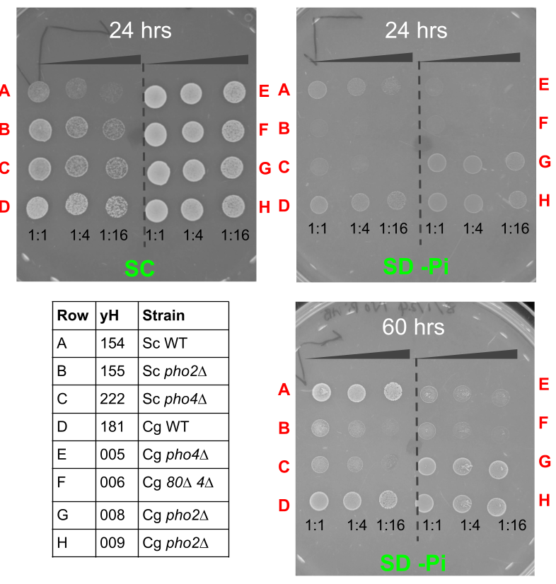


- &shy;<!-- .element: class="fragment" data-fragment-index="1" -->But _pho4∆_ and _pho2∆_ can still grow even in no Pi
- &shy;<!-- .element: class="fragment" data-fragment-index="2" --><mark>_Question_</mark>
	- &shy;<!-- .element: class="fragment" data-fragment-index="3" -->What is the contribution of the PHO regulon to cell growth during and recovery from Pi limitation.
- &shy;<!-- .element: class="fragment" data-fragment-index="4" --><mark>_Reference_</mark>
	- &shy;<!-- .element: class="fragment" data-fragment-index="5" -->Gurvich, Barkai, et al. 2017. “Dual Role of Starvation Signaling in Promoting Growth and Recovery.” _PLOS Biology_ 15 (12): e2002039.
</split>
</div></script></section><section  data-markdown><script type="text/template"></script></section><section  data-markdown><script type="text/template"><!-- .slide: class="drop" -->
<div class="" style="position: absolute; left: 0px; top: 0px; height: 700px; width: 960px; min-height: 700px; display: flex; flex-direction: column; align-items: center; justify-content: center" absolute="true">

## Introduction
- yeast cells induce a starvation response (transcriptional), which doesn't eliminate the growth arrest but only delays its onset by a limited number of generations.

<div class="callout callout-color4">
<div class="callout-title">
<div class="callout-icon">

<i class="fas fa-question-circle" ></i>


</div>
<div class="callout-title-inner">

Question

</div>
</div>
<div class="callout-content">

What's the purpose of the starvation (transcriptional) response program?

</div>
</div>
</div></script></section><section  data-markdown><script type="text/template"><!-- .slide: class="drop" -->
<div class="" style="position: absolute; left: 0px; top: 0px; height: 700px; width: 960px; min-height: 700px; display: flex; flex-direction: column; align-items: center; justify-content: center" absolute="true">

<div class="callout callout-color2">
<div class="callout-title">
<div class="callout-icon">

<i class="fas fa-fire-alt" ></i>


</div>
<div class="callout-title-inner">

Hypothesis

</div>
</div>
<div class="callout-content">

the starvation program activated when nutrients are depleted prepares cells not only for growth in the limiting environment but also for their subsequent recovery once nutrients are replenished

- in their previous Science paper, they found that the _PHO84_-constitutive cells induced the starvation program with a delay relative to wild-type cells, and when transferred back to rich media, these cells showed a longer lag time and were outcompeted by wild-type cells.

</div>
</div>
</div></script></section><section  data-markdown><script type="text/template"><!-- .slide: class="drop" -->
<div class="" style="position: absolute; left: 0px; top: 0px; height: 700px; width: 960px; min-height: 700px; display: flex; flex-direction: column; align-items: center; justify-content: center" absolute="true">

## Result summary

- cells activate the starvation program sequentially
- &shy;<!-- .element: class="fragment" data-fragment-index="1" -->the first activation wave is seen when phosphate is only partially depleted and before cell growth is reduced.
	- &shy;<!-- .element: class="fragment" data-fragment-index="2" -->this phase may serve as a preparation period, as deleting _PHO4_ does not affect cell growth at this phase.
- &shy;<!-- .element: class="fragment" data-fragment-index="3" -->the second wave of expression coincides with the time when cell growth begins to slow down
	- &shy;<!-- .element: class="fragment" data-fragment-index="4" -->at this stage, deletion of _PHO4_ further reduces growth rate
- &shy;<!-- .element: class="fragment" data-fragment-index="5" -->the early transcription wave contributes to the recovery from starvation by increasing phosphate influx once nutrients are replenished
- &shy;<!-- .element: class="fragment" data-fragment-index="6" -->optimal recovery depends on the proper, early induction of the starvation program
</div></script></section><section  data-markdown><script type="text/template"><!-- .slide: class="drop" -->
<div class="" style="position: absolute; left: 0px; top: 0px; height: 700px; width: 960px; min-height: 700px; display: flex; flex-direction: column; align-items: center; justify-content: center" absolute="true">

## Growth response to Pi limitation
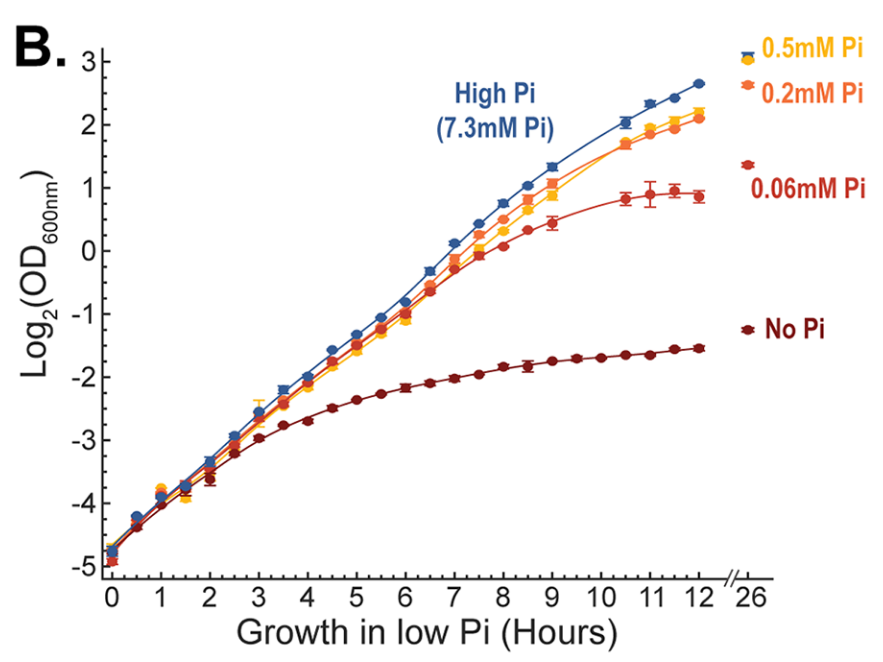

- Cells grew for different numbers of generations, ranging from **~8 generations** at 0.5 mM Pi (relatively high) to only **~3.5 generations** in no Pi
</div></script></section><section  data-markdown><script type="text/template"><!-- .slide: class="drop" -->
<div class="" style="position: absolute; left: 0px; top: 0px; height: 700px; width: 960px; min-height: 700px; display: flex; flex-direction: column; align-items: center; justify-content: center" absolute="true">

## Cells activate starvation response in TWO WAVES
<split even gap="1">
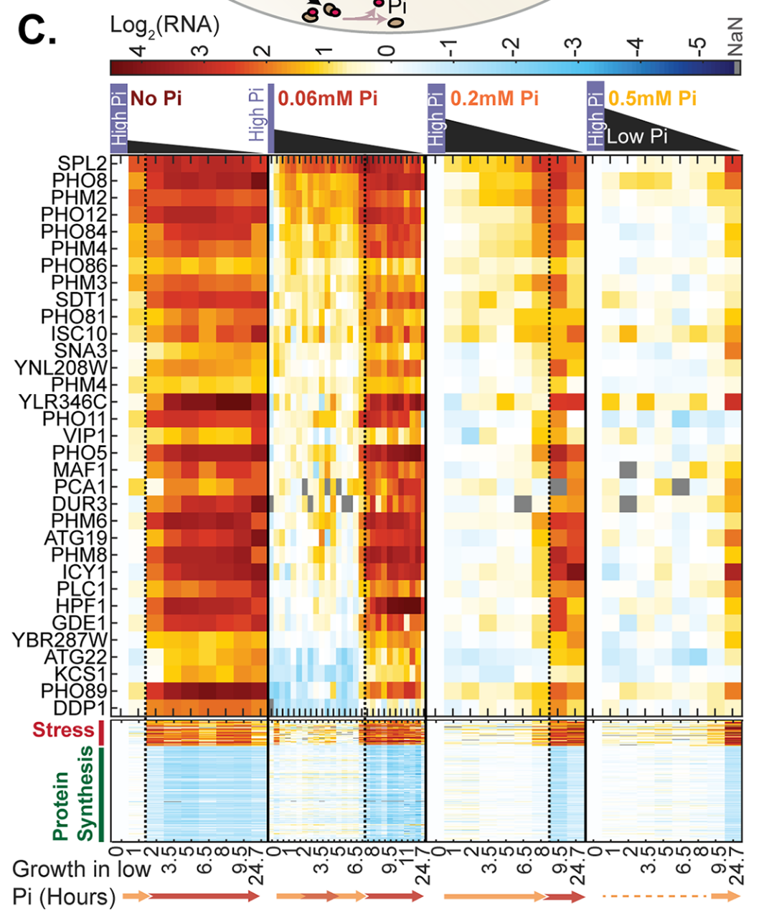


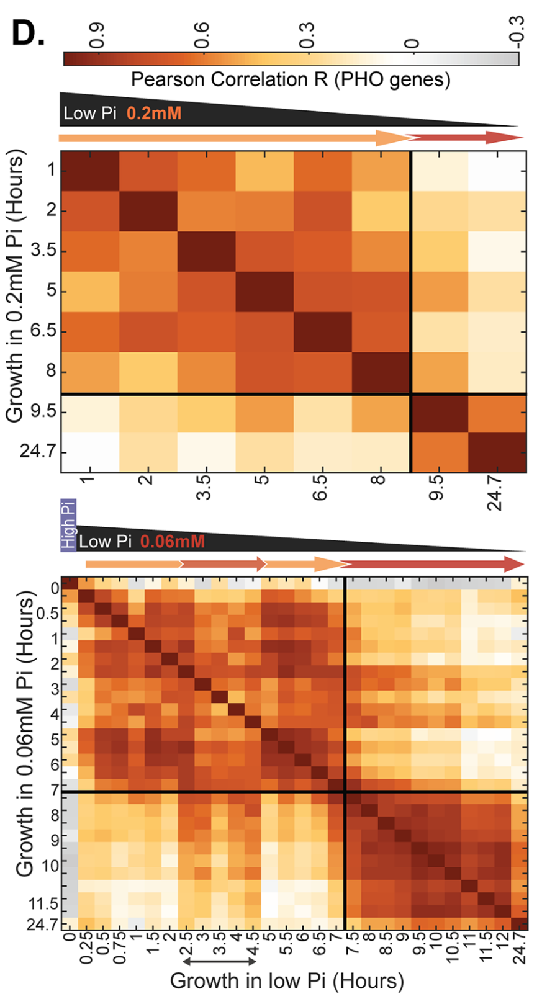

</split>
</div></script></section><section  data-markdown><script type="text/template"><!-- .slide: class="drop" -->
<div class="" style="position: absolute; left: 0px; top: 0px; height: 700px; width: 960px; min-height: 700px; display: flex; flex-direction: column; align-items: center; justify-content: center" absolute="true">

## Induction of the second wave corresponds to growth slow down
<split even gap="1">
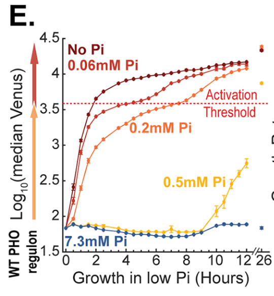


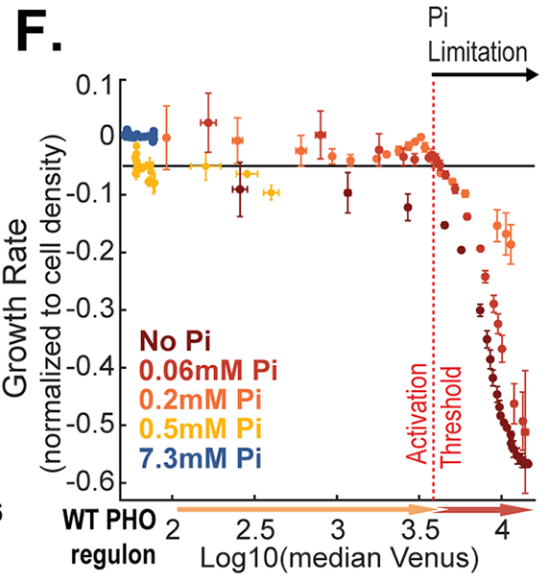

</split>


<p><div class="has-light-background" style="background-color: yellowgreen; position: absolute; left: 5%; top: 80%; height: 10%; width: 90%; display: flex; flex-direction: column; align-items: center; justify-content: center" >

Cells induce the initial transcription wave when phosphate levels are reduced but are not yet limiting for growth.
</div></p>

<div class="footnotes" role="doc-endnotes">
<ol>
<li id="fn:1" role="doc-endnote" class="footnote"><p>

_PHO84p-Venus_ reporter. Orange --> Red indicates 1st and 2nd wave

</p></li><li id="fn:2" role="doc-endnote" class="footnote"><p>

Cell growth rate was calculated by the logarithmicslope ofthe OD curve

</p></li></ol>
</div>
</div></script></section><section  data-markdown><script type="text/template"><!-- .slide: class="drop" -->
<div class="" style="position: absolute; left: 0px; top: 0px; height: 700px; width: 960px; min-height: 700px; display: flex; flex-direction: column; align-items: center; justify-content: center" absolute="true">

## Measure the contribution of PHO response to fitness
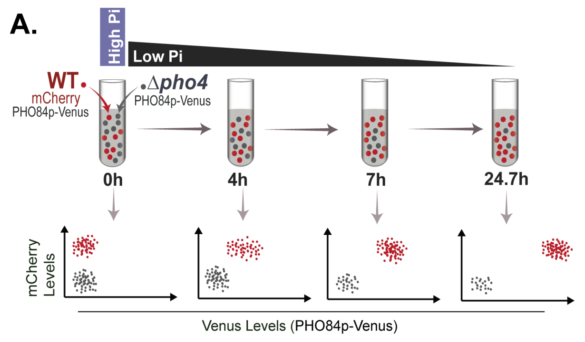
</div></script></section><section  data-markdown><script type="text/template"><!-- .slide: class="drop" -->
<div class="" style="position: absolute; left: 0px; top: 0px; height: 700px; width: 960px; min-height: 700px; display: flex; flex-direction: column; align-items: center; justify-content: center" absolute="true">

## Pho4 targets important in the second phase
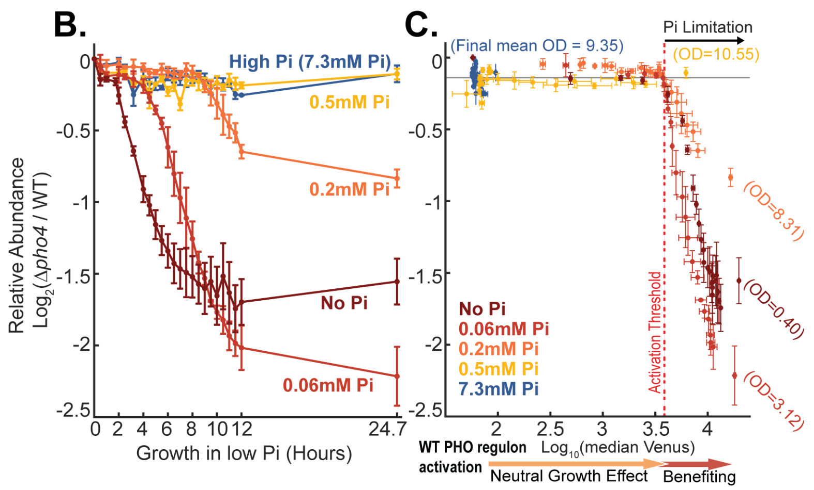
</div></script></section><section  data-markdown><script type="text/template"><!-- .slide: class="drop" -->
<div class="" style="position: absolute; left: 0px; top: 0px; height: 700px; width: 960px; min-height: 700px; display: flex; flex-direction: column; align-items: center; justify-content: center" absolute="true">

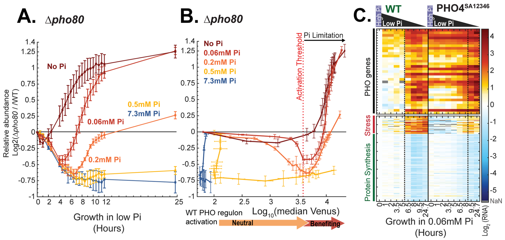

<div class="callout callout-color3">
<div class="callout-title">
<div class="callout-icon">

<i class="fas fa-check" ></i>


</div>
<div class="callout-title-inner">

Constitutive activation of PHO costly in high Pi, promotes growth in very low Pi  

</div>
</div>
<div class="callout-content">

</div>
</div>
</div></script></section><section  data-markdown><script type="text/template"><!-- .slide: class="drop" -->
<div class="" style="position: absolute; left: 0px; top: 0px; height: 700px; width: 960px; min-height: 700px; display: flex; flex-direction: column; align-items: center; justify-content: center" absolute="true">

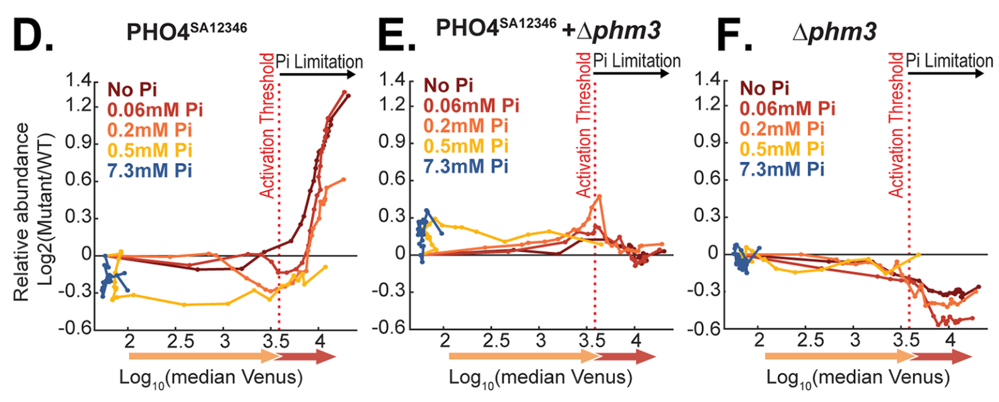


<div class="callout callout-color3">
<div class="callout-title">
<div class="callout-icon">

<i class="fas fa-check" ></i>


</div>
<div class="callout-title-inner">

the fitness effect of constitutive PHO mutant is largely due to Phm3

</div>
</div>
<div class="callout-content">

</div>
</div>
</div></script></section><section  data-markdown><script type="text/template"><!-- .slide: class="drop" -->
<div class="" style="position: absolute; left: 0px; top: 0px; height: 700px; width: 960px; min-height: 700px; display: flex; flex-direction: column; align-items: center; justify-content: center" absolute="true">

<div class="callout callout-color4">
<div class="callout-title">
<div class="callout-icon">

<i class="fas fa-question-circle" ></i>


</div>
<div class="callout-title-inner">

Who is Phm3?

</div>
</div>
<div class="callout-content">

- _PHM3_ = _VTC4_ [SGD link](https://www.yeastgenome.org/locus/S000003549)

- Vacuolar membrane polyphosphate polymerase, involved in synthesis and transfer of polyP to vacuole

</div>
</div>
</div></script></section><section  data-markdown><script type="text/template"><!-- .slide: class="drop" -->
<div class="" style="position: absolute; left: 0px; top: 0px; height: 700px; width: 960px; min-height: 700px; display: flex; flex-direction: column; align-items: center; justify-content: center" absolute="true">

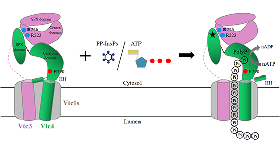

- &shy;<!-- .element: class="fragment" data-fragment-index="1" -->In prokaryotes, the polyphosphate kinase PPK1/2 catalyzes the transfer of the `$\gamma$`-phosphate from ATP to produce polyP chains<sup id="fnref:3" role="doc-noteref">1</sup>
- &shy;<!-- .element: class="fragment" data-fragment-index="2" -->The vacuolar transporter chaperon (VTC) complex is the only polyP-synthesizing enzyme identified in eukaryotes
- &shy;<!-- .element: class="fragment" data-fragment-index="3" -->PolyP synthesis and transport into the vacuole are coupled (immediately after)
- &shy;<!-- .element: class="fragment" data-fragment-index="4" -->Activity of VTC complex is regulated through inositol-based signaling molecules.

<div class="footnotes" role="doc-endnotes">
<ol>
<li id="fn:3" role="doc-endnote" class="footnote"><p>

Liu, Wei, Jiening Wang, Véronique Comte‐Miserez, Mengyu Zhang, Xuejing Yu, Qingfeng Chen, Henning Jacob Jessen, Andreas Mayer, Shan Wu, and Sheng Ye. 2023. “Cryo‐EM Structure of the Polyphosphate Polymerase VTC Reveals Coupling of Polymer Synthesis to Membrane Transit.” _The EMBO Journal_ 42 (10): e113320. [https://doi.org/10.15252/embj.2022113320](https://doi.org/10.15252/embj.2022113320).

</p></li></ol>
</div>
</div></script></section><section  data-markdown><script type="text/template"><!-- .slide: class="drop" -->
<div class="" style="position: absolute; left: 0px; top: 0px; height: 700px; width: 960px; min-height: 700px; display: flex; flex-direction: column; align-items: center; justify-content: center" absolute="true">

<div class="callout callout-color-default">
<div class="callout-title">
<div class="callout-icon">

<i class="fas fa-pencil-alt" ></i>


</div>
<div class="callout-title-inner">

Hypothesis: 

</div>
</div>
<div class="callout-content">

First wave of transcriptional response _prepares cells for recovery after the starvation, when nutrients are replenished_. The first phase is termed the "preparation phase".

</div>
</div>
</div></script></section><section  data-markdown><script type="text/template"><!-- .slide: class="drop" -->
<div class="" style="position: absolute; left: 0px; top: 0px; height: 700px; width: 960px; min-height: 700px; display: flex; flex-direction: column; align-items: center; justify-content: center" absolute="true">

## Longer preparation correlates with shorter recovery time
<split left="1" right="2">
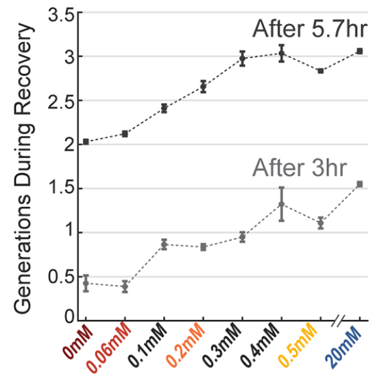


- Wild type cells were incubated in different [Pi] for 21 hours, then transferred to high Pi.

- &shy;<!-- .element: class="fragment" data-fragment-index="1" -->Plotted are the number of generations (doublings) the population went through at 3hr and 5.7hr.
- &shy;<!-- .element: class="fragment" data-fragment-index="2" -->The lag time decreased (more doublings) with increased levels of phosphate in the incubation media.
- &shy;<!-- .element: class="fragment" data-fragment-index="3" -->It was previously shown that cells spend more time in the preparation phase (first wave) in media with higher Pi.
</split>
</div></script></section><section  data-markdown><script type="text/template"><!-- .slide: class="drop" -->
<div class="" style="position: absolute; left: 0px; top: 0px; height: 700px; width: 960px; min-height: 700px; display: flex; flex-direction: column; align-items: center; justify-content: center" absolute="true">

## Pho4 targets contribute strongly to the recovery phase

<split left="1" right="2">
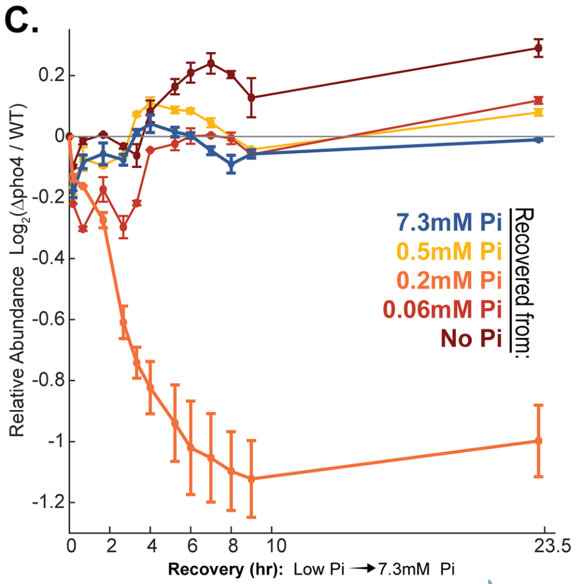


- &shy;<!-- .element: class="fragment" data-fragment-index="1" -->Wild type and _pho4∆_ cells were incubated at different [Pi] for 24.7 hrs, mixed one-to-one and then transferred to high Pi media, in which their relative abundance is measured. 
- &shy;<!-- .element: class="fragment" data-fragment-index="2" -->When previously incubated at 0.2 mM Pi, where wild type cells experience a long preparation phase, they show the biggest advantage over _pho4∆_ cells during recovery
- &shy;<!-- .element: class="fragment" data-fragment-index="3" -->when incubated at 0.06 mM or 0 mM Pi, the preparation phase is **too short** for there to be a major benefit (author's view)
- &shy;<!-- .element: class="fragment" data-fragment-index="4" -->at 0.5 mM, the authors explained that cells were arrested before they were phosphate limited.
</split>
</div></script></section><section  data-markdown><script type="text/template"><!-- .slide: class="drop" -->
<div class="" style="position: absolute; left: 0px; top: 0px; height: 700px; width: 960px; min-height: 700px; display: flex; flex-direction: column; align-items: center; justify-content: center" absolute="true">

-  **Conclusion**
	- &shy;<!-- .element: class="fragment" data-fragment-index="1" -->the starvation program contributes to cell recovery from phosphate limitation, but only in conditions that introduce a significant delay between the induction of the first and second waves of Pho4-targeted genes.
- &shy;<!-- .element: class="fragment" data-fragment-index="2" -->**Question**
	- &shy;<!-- .element: class="fragment" data-fragment-index="3" -->How did the program contribute?
- &shy;<!-- .element: class="fragment" data-fragment-index="4" -->**Hypothesis**
	1) promote recovery from starvation by limiting phosphate toxicity
	2) promote recovery by "facilitating the increase in internal phosphate upon recovery"
- &shy;<!-- .element: class="fragment" data-fragment-index="7" --><mark>I don't fully understand / agree with their conclusion.</mark>
</div></script></section><section  data-markdown><script type="text/template">
</script></section></div>
    </div>

    <script src="dist/reveal.js"></script>

    <script src="plugin/markdown/markdown.js"></script>
    <script src="plugin/highlight/highlight.js"></script>
    <script src="plugin/zoom/zoom.js"></script>
    <script src="plugin/notes/notes.js"></script>
    <script src="plugin/math/math.js"></script>
	<script src="plugin/mermaid/mermaid.js"></script>
	<script src="plugin/chart/chart.min.js"></script>
	<script src="plugin/chart/plugin.js"></script>
	<script src="plugin/menu/menu.js"></script>
	<script src="plugin/customcontrols/plugin.js"></script>
	<script src="plugin/chalkboard/plugin.js"></script>
	<script src="plugin/reveal-pointer/pointer.js"></script>

    <script>
      function extend() {
        var target = {};
        for (var i = 0; i < arguments.length; i++) {
          var source = arguments[i];
          for (var key in source) {
            if (source.hasOwnProperty(key)) {
              target[key] = source[key];
            }
          }
        }
        return target;
      }

	  function isLight(color) {
		let hex = color.replace('#', '');

		// convert #fff => #ffffff
		if(hex.length == 3){
			hex = `${hex[0]}${hex[0]}${hex[1]}${hex[1]}${hex[2]}${hex[2]}`;
		}

		const c_r = parseInt(hex.substr(0, 2), 16);
		const c_g = parseInt(hex.substr(2, 2), 16);
		const c_b = parseInt(hex.substr(4, 2), 16);
		const brightness = ((c_r * 299) + (c_g * 587) + (c_b * 114)) / 1000;
		return brightness > 155;
	}

	var bgColor = getComputedStyle(document.documentElement).getPropertyValue('--r-background-color').trim();
	var isLight = isLight(bgColor);

	if(isLight){
		document.body.classList.add('has-light-background');
	} else {
		document.body.classList.add('has-dark-background');
	}

      // default options to init reveal.js
      var defaultOptions = {
        controls: true,
        progress: true,
        history: true,
        center: true,
        transition: 'default', // none/fade/slide/convex/concave/zoom
        plugins: [
          RevealMarkdown,
          RevealHighlight,
          RevealZoom,
          RevealNotes,
          RevealMath.MathJax3,
		  RevealMermaid,
		  RevealChart,
		  RevealCustomControls,
		  RevealMenu,
	      RevealPointer,
		  RevealChalkboard, 
        ],


    	allottedTime: 120 * 1000,

		mathjax3: {
			mathjax: 'plugin/math/mathjax/tex-mml-chtml.js',
		},
		markdown: {
		  gfm: true,
		  mangle: true,
		  pedantic: false,
		  smartLists: false,
		  smartypants: false,
		},

		mermaid: {
			theme: isLight ? 'default' : 'dark',
		},

		customcontrols: {
			controls: [
				{ icon: '<i class="fa fa-pen-square"></i>',
				title: 'Toggle chalkboard (B)',
				action: 'RevealChalkboard.toggleChalkboard();'
				},
				{ icon: '<i class="fa fa-pen"></i>',
				title: 'Toggle notes canvas (C)',
				action: 'RevealChalkboard.toggleNotesCanvas();'
				},
			]
		},
		menu: {
			loadIcons: false
		}
      };

      // options from URL query string
      var queryOptions = Reveal().getQueryHash() || {};

      var options = extend(defaultOptions, {"width":960,"height":700,"margin":0.04,"controls":true,"progress":true,"slideNumber":true,"transition":"fade","transitionSpeed":"default"}, queryOptions);
    </script>

    <script>
      Reveal.initialize(options);
    </script>
  </body>

  <!-- created with Advanced Slides -->
</html>
